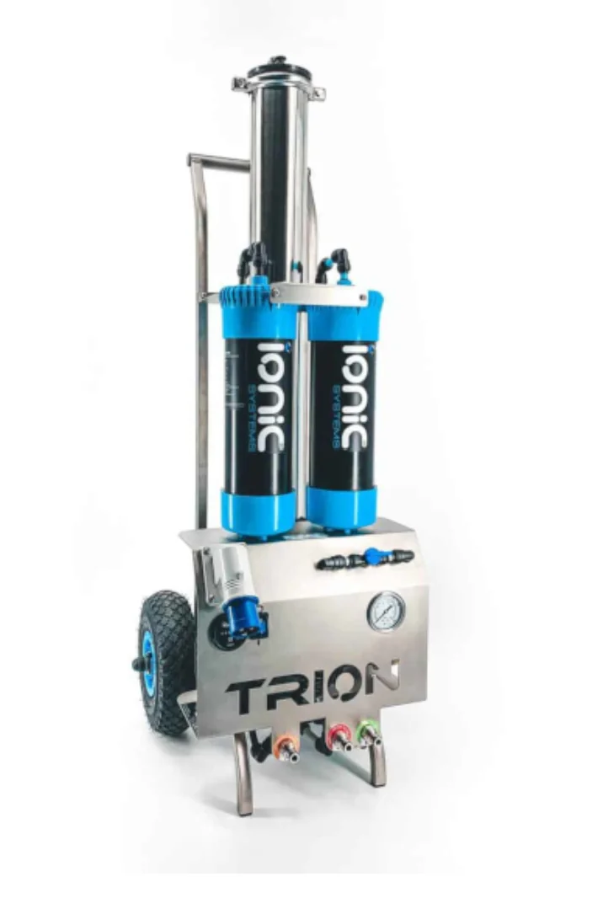
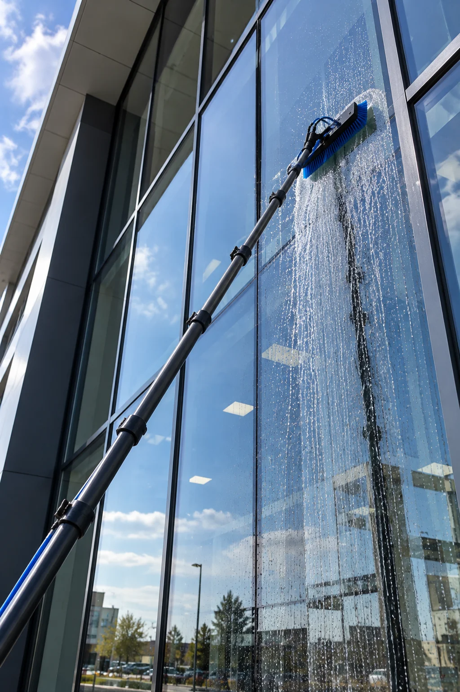

Okna i witryny
Przeszklenia domów, lokali usługowych, sklepów i biur.
Potrzebujesz profesjonalnego systemu do mycia wodą demineralizowaną na konkretne zlecenie? Wynajmij Ionic Trion RO/DI i pracuj bez konieczności zakupu własnego urządzenia. Wynajem i odbiór urządzenia w Krośnie – zapraszamy klientów z Rzeszowa, Jasła, Sanoka, Gorlic i Nowego Sącza.
Wynajem systemu do mycia wodą demineralizowaną – cena brutto za każdą dobę.
| Okres wynajmu | Cena brutto za dobę |
|---|---|
| 1–2 dni | 500 zł |
| 3–6 dni | 450 zł |
| 7 dni i więcej | 400 zł |
Stawka dobowa zależy od całkowitej liczby dni wynajmu. Kaucja, wyposażenie dodatkowe i ewentualny transport – do uzgodnienia przed rezerwacją.


Woda oczyszczana w technologii RO/DI pozwala ograniczyć powstawanie osadów mineralnych na odpowiednio mytych powierzchniach. Efekt zależy również od techniki pracy i stopnia zabrudzenia.
Przeszklenia domów, lokali usługowych, sklepów i biur.
Duże powierzchnie szklane i elementy architektury przystosowane do tej metody czyszczenia.
Mycie paneli z zachowaniem zaleceń producenta instalacji i zasad bezpieczeństwa.
Wynajmujesz nie tylko urządzenie do produkcji wody demineralizowanej, ale kompletny zestaw do mycia okien i przeszkleń na wysokości.
Jeden lekki kij teleskopowy z włókna węglowego w zestawie podstawowym, do pracy na wysokich przeszkleniach.
Węże do doprowadzenia wody i pracy z systemem RO/DI.
Profesjonalny system filtracji wody wraz z wyposażeniem niezbędnym do rozpoczęcia mycia.
Cały zestaw jest przygotowany do pracy – bez konieczności kompletowania podstawowych elementów osobno.
Opcja dodatkowa: drugi kij teleskopowy o długości do 5 m – 100 zł za dobę (dopłata do ceny wynajmu zestawu).
Deklarowana wydajność systemu; rzeczywista zależy m.in. od parametrów wody zasilającej.
Filtracja RO wspomagana etapem demineralizacji DI.
Wynajem na uzgodniony okres, bez kosztu zakupu całego urządzenia.
W cenie wynajmu znajduje się lekki karbonowy kij teleskopowy do 14 m oraz węże o łącznej długości 200 m. Dodatkowy kij do 5 m dostępny za dopłatą.
Podajesz termin, rodzaj prac i lokalizację.
Potwierdzamy dostępność, kaucję i sposób odbioru kompletnego zestawu.
Odbierasz zestaw na uzgodniony czas i zwracasz go zgodnie z ustaleniami.
Miejsce wynajmu i odbioru urządzenia znajduje się w Krośnie. Z oferty mogą skorzystać również firmy i osoby z Rzeszowa, Łańcuta, Strzyżowa, Jasła, Sanoka, Brzozowa, Gorlic, Biecza i Nowego Sącza oraz okolicznych miejscowości. Nie prowadzimy oddziałów wypożyczalni w tych miastach.
Jeśli realizujesz zlecenie poza Krosnem, skontaktuj się z nami – ustalimy termin, sposób odbioru i ewentualne możliwości transportu.
System RO/DI służy do oczyszczania doprowadzonej wody. Wymagania dotyczące podłączenia i parametrów wody ustalimy przed wynajmem.
Tak. W cenie jest jeden lekki karbonowy kij teleskopowy do 14 m oraz węże o łącznej długości 200 m. Możesz dobrać drugi kij teleskopowy do 5 m za 100 zł za dobę.
Woda demineralizowana jest wykorzystywana do czyszczenia fotowoltaiki, ale metodę pracy trzeba dopasować do zaleceń producenta paneli i warunków na obiekcie.
Wypożyczalnia i odbiór urządzenia znajdują się w Krośnie. Obsługujemy zapytania również z Rzeszowa, Jasła, Sanoka, Gorlic i Nowego Sącza; ewentualny transport uzgadniamy indywidualnie.
Napisz, kiedy i do jakiej pracy potrzebujesz sprzętu. Przedstawimy warunki wynajmu i potwierdzimy dostępność.
Odbiór: Krosno • oferta dla Rzeszowa, Jasła, Sanoka, Gorlic, Nowego Sącza i okolic